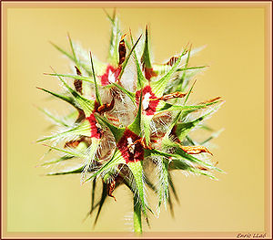

La rosa de los vientos
 De: La Frikipedia, la enciclopedia extremadamente seria.
De: La Frikipedia, la enciclopedia extremadamente seria.
 La verdadera rosa de los vientos
Así son las rosas de los vientos en
Vietnam.
Programa que se emitía en código morse a altas horas de la madrugada. Años más tarde cambió el nombre, de Turno de Noche pasó a La Rosa de los Vientos.
Circula una leyenda urbana según la que el nombre se creó debido a que no tenían ni zorra idea de dónde meter el programa y estaba buscando su norte.
Colaboradores
- Juan Antonio Cebrian: más conocido como JJC (tenía envidia de JJ Santos) o como él mismo se proclama la momia de Amenofis cuarto. Fundados rumores dicen que lo de Amenofis es porque hace tiempo que no echa un polvo, mientras que lo de cuatro es para confundir a la gente con los programas de Iker Jiménez que todos acaban en cuatro. Es el conductor del programa y por eso no bebe. También escribe muchos libros, de los cuales él compra la mitad, sus amigos un 25% y el otro 25% lo regala en su programa.
- Bruno Cardeñosa: colaborador pluriempleado, trabaja en: Onda Cero, La Sexta que no la pilla ni Dios con Boris Izaguirre, escritor de libros (entre ellos la mundialmente conocida serie 11, con sus dos volúmenes el S y el M), escribe en la revista enigma o mundialmente conocida como ein?, los fines de semana no va a la discoteca sino que da paseos y visita a sus amigos de La Rosa y cuando tiene tiempo libre envía millones de correos electrónicos para difundir la leyenda urbana de que los lacasitos son métodos anticonceptivos válidos en Brasil.
- Carlos Canales: colaborador de La Rosa y como los anteriores, pluriempleado. Su papel en la Rosa es fundamental, ya que es el único colaborador que habla de todo (en su casa no le dejan hablar). Se cree que en su cabeza hay almacenados más de 9999999999x10^9999999 Yottabytes, los cuales ocupan sólo el 10% del cerebro, hecho que verifica la teoría de Einstein.
- Jesús Callejo: al igual que los anteriores pluriempleado. Dicen que inventó un mundo de fantasía en el que veía a Hadas y Gnomos, y nadie se lo cree, pero ahí sigue buscando a David. Junto con Carlos Canales escribió una amplia saga de libros infantiles tales como: "Hadas", "Duendes", "Los dueños de los sueños. Ogros, cocos y otros seres oscuros", "Gnomos" y espera continuar con la saga de Harry Potter. Carlos Callejo es un floppy disk de Carlos Canales, por eso parece que sabe tanto.
- Fernando Rueda: otro pluriempleado, ex-agente de la CIA, KGB, MOSSAD y de la TIA. Es redactor para la revista Interviú, pero no es más que una excusa para ver lo que todos sabemos sin que su mujer le eche de casa. Suele tomar lo que Juan Antonio Cebrian pone todas las noches y tiene por costumbre salir por las puertas y matarse. Se cree que tiene más vidas que los gatos y que JJC cansado de tenerlo en su programa intentó matarle pero es más difícil que asesinar a Fidel Castro. Por si alguna vez viajas a algún país anglosajón, allí le conocen como Fernando Rolling.
- Raúl Soghún: en su barrio le conocen como el Catwoman pasearse con un niño que dice que es su hijo, cuando todo el mundo sabe que los murciélagos y los gatos no pueden tener descendencia. También alardea de ser un mutante, lo cierto es que tiene un bulto detrás de la oreja, pero se desconoce su procedencia. Análisis químicos apoyan la "Teoría de la Runa", o sea, no sale de su tienda de Comics ni pa' ducharse.
- DJ Martín: éste es un caso especial, es trabajador pluriempleado y explotado. Hace chistes, pero poca gente los entiende tipo "entra una persona a un bar de pinchos. -Ay, ay, ay". Le quieren despedir, porque sus secciones no tienen futuro, Azul y Verde, la de música de la cual JJC se mofa; por eso sólo escucha a los Piedra Rodante y de vez en cuando lee el correo de sus admiradoras. El trabajo más duro de su vida fue contar diez correos electrónicos para saber cuál eran las siete maravillas Españolas.
- José Manuel Escribano: habla de cine, pero nunca del página web marginal que sólo la leen él y JJC. Dicen que siempre lleva cámaras al cine y después lo sube al emule bajo el seudónimo de pirata_muy_malo.
- Juan Ignacio Cuesta: es un milagro de la naturaleza, lleva más tiempo que preñado por la melodía y se lo llevó al programa. No le pagan nada porque dice ser un monje que vive sin opulencia, salvo con la PSP que la utiliza para ver las películas del Escribano. Su espacio ocupa el 0,0000001% del programa debido a que no para de cantar y le tienen que cortar el micro.
Secciones
El programa está dividido en la parte superior, inferior, exterior (derecha e izquierda) y en otras por conocer.
- Tertulia de las Cuatro C: debido a un hecho insólito en la radio del mundo mundial, esta sección está formada por cuatro personas (existe la teoría de que una de ellas es un robot) cuyos apellidos acabando en C. traman una conspiración mundial en contra de las razas Carias (aquellas razas que no empiezan por C); el jefe de esta deportivo de Bruno Cardeñosa desciende o no. En uno de los programas (no se sabe cuál) fueron capaces de demostrar que liga de furgol.
- Materia Reservada: en esta sección Fernando Rolling nos narra sus paranoias de cuando era chaval, que si los de la CIA iban detrás de él cuando se dirigía al colegio porque dentro de los cuadernos de caligrafía Santillana llevaba los planos de la naranjo y él se creía que era un narcotraficante de droga. Al final de cada sección nos cuenta la historia de sus amigos los espías (es decir amigos imaginarios), la más conocida es la del agente Nikita ni pon, y la de Lawrence de Arabia es más conocida por sus películas en las que sale de negro.
vease tambien
Autor(es):
- Krusher
- Nexo
- Frikiman
- Aque
- Alex2610
- Kevint88
- Francéspañol
- Thabita
- Veni Vidi Vici
- Pufy
Frikipedia 2005-2016, Licencia
GFDL 1.2 - Extraído por FrikiLeaks